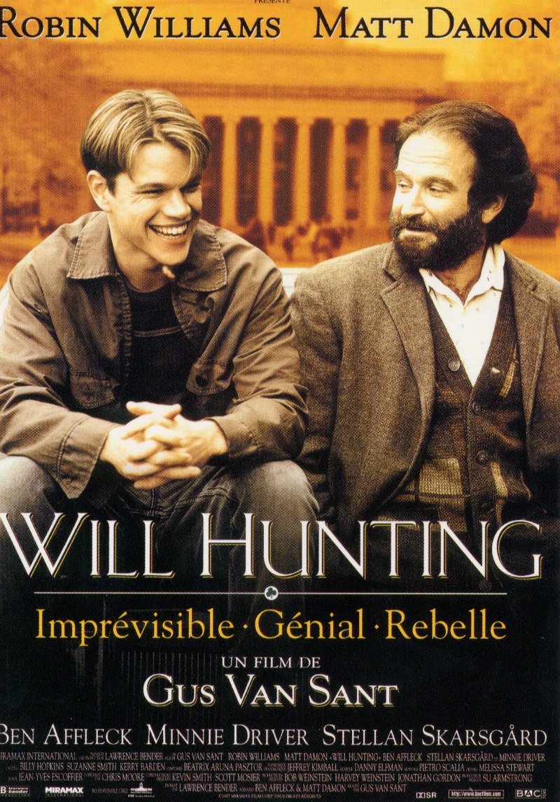

LéonUn tueur à gages répondant au nom de Léon prend sous son aile Mathilda, une petite fille de douze ans, seule rescapée du massacre de sa famille. Bientôt, Léon va faire de Mathilda une "nettoyeuse", comme lui. Et Mathilda pourra venger son petit frère... |
|
|  |
Will HuntingWill Hunting est un authentique génie mais également un rebelle aux élans imprévisibles. Il est né dans le quartier populaire de South Boston et a arrêté très tôt ses études, refusant le brillant avenir que pouvait lui procurer son intelligence. Il vit désormais entouré d'une bande de copains et passe son temps dans les bars a chercher la bagarre et à commettre quelques petits délits qui risquent bien de l'envoyer en prison. C'est alors que ses dons prodigieux en mathématiques attirent l'attention du professeur Lambeau, du Massachusetts Institute of Technology... |
Memories of MurderProvince de Gyunggi 1986. Le corps d'une jeune femme brutalement violée puis assassinée est retrouvé dans la campagne. Deux mois plus tard, d'autres crimes similaires ont lieu. Dans un pays qui n'a jamais connu de telles atrocités, la rumeur d'actes commis par un serial killer grandit de jour en jour. Une unité spéciale de la police est ainsi créée dans la région afin de trouver rapidement le coupable. Elle est placée sous les ordres d'un policier local et d'un détective spécialement envoyé de Séoul à sa demande. Devant l'absence de preuves concrètes, les deux hommes sombrent peu à peu dans le doute... |